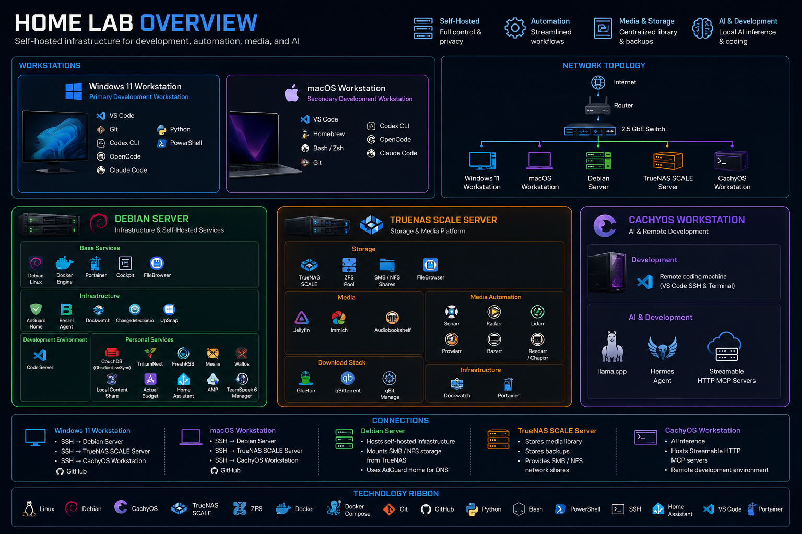

Projects
These are the projects I have built or am building. Each one is documented honestly, including the problems I ran into and what I learned from them.

Self-Hosted Home Lab
A home lab running Docker, TrueNAS, and several operating systems that I use to learn Linux administration, containers, storage, and automation by running real services.
Why I built it
I wanted a safe place to practice real system administration instead of only reading about it, and to run my own services end to end.
Challenges
A Debian server experienced a full hard freeze that I had to diagnose from logs, and I had to work through Docker networking and persistent storage issues.
How I solved it
I worked through the system logs to narrow the freeze down to a likely kernel or hardware fault, installed smartmontools to watch drive health, and set up an external heartbeat monitor so I would be alerted if the machine went down again.
What I learned
How to read system logs during an outage, how to reason about kernel versus hardware causes, and how to add monitoring so problems surface earlier.
Future improvements
Add automated backups, add container health checks, document the network layout, and add a status dashboard.
Bash Backup Script
A Bash script that backs up important home lab data to a separate location with logging and timestamped folders.
Why I built it
I needed a simple, repeatable way to back up my home lab data without relying on a manual process.
Challenges
Handling paths with spaces, creating proper logging, and making the script idempotent so it does not create duplicate backups.
How I solved it
Used quoted variables throughout, added a log file with timestamps, and used rsync to avoid copying unchanged files.
What I learned
How to write defensive Bash scripts, how to use rsync for incremental backups, and how to schedule tasks with cron.
Future improvements
Add email or notification on failure, add retention policy to remove old backups, and add restore testing.
System Health Monitor Script
A script that checks disk usage, memory, and service status, and logs warnings when thresholds are exceeded.
Why I built it
I wanted early warnings when a server was running low on disk or memory instead of finding out after something broke.
Challenges
Parsing command output reliably and making the script portable across different Linux distributions.
How I solved it
Used standard tools like df and free with awk to extract values, and kept the logic simple so it works on most Linux systems.
What I learned
How to parse CLI output in Bash, how to use exit codes, and how to think about monitoring as a habit rather than a one-time fix.
Future improvements
Add notification support, add more checks for Docker containers, and rewrite parts in Python for easier maintenance.
Portfolio Website
A personal website built with HTML, CSS, and JavaScript to document my IT learning journey and technical projects, deployed with GitHub Pages.
Why I built it
I wanted a central place to document my work, practice version control, and have something professional to show during my job search.
Challenges
Keeping content honest without underselling real work, managing the same navigation across multiple pages, and making the site accessible.
How I solved it
Used a phased spec to stay focused, kept the structure simple with plain HTML and CSS, and followed accessibility basics from the start.
What I learned
How to plan a small web project in phases, how to write semantic HTML, and how to deploy with GitHub Pages.
Future improvements
Add more project screenshots, improve the mobile navigation, add a working contact form, and keep adding projects as I build them.